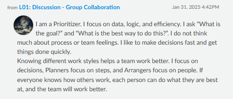

L01 – Introduction to Information Sciences
Group Activity
File: Download PDF
Reflection: In this group activity, we collaborated to explore basic concepts in information science. It was my first exposure to thinking critically about how data, information, and systems work together to solve problems. Working with others also helped clarify how group roles and communication affect digital collaboration.
Treasure Hunt Activity
File: Download PDF
Reflection: This activity helped me understand how information is located, structured, and searched online. It was a fun and practical way to explore information literacy and online navigation strategies.
Discussion Post
File: Download PDF
Reflection: For the discussion, I reflected on my digital identity and how online profiles represent us. It made me realize how public and permanent digital footprints can be. Reading other students’ thoughts helped me see different perspectives on privacy and personal data.
Screenshots
Assignment Screenshot 1:
Assignment Screenshot 2:

Assignment Screenshot 3:

Discussion Screenshot:
